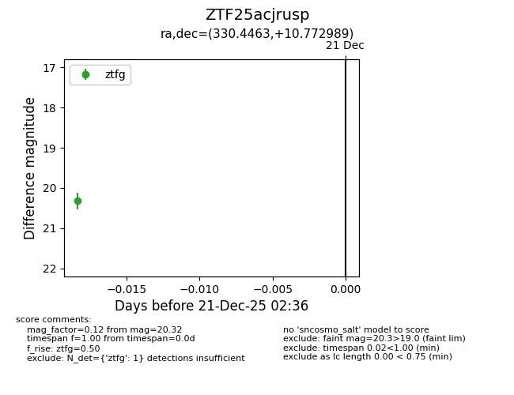
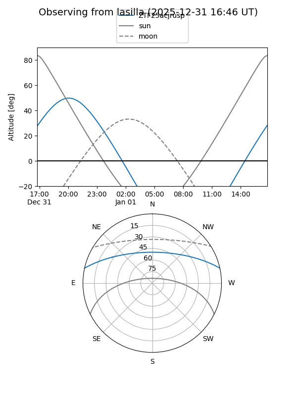
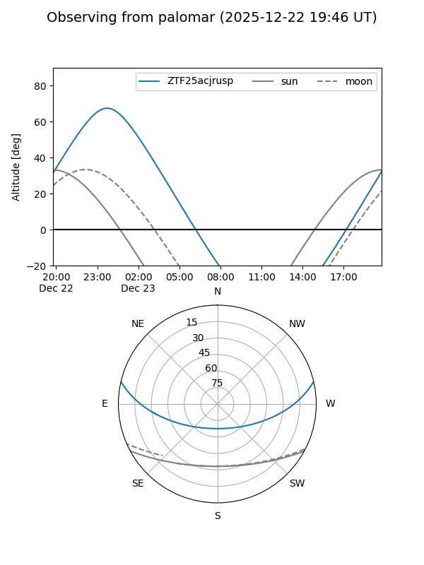

ZTF25acjrusp
Target ZTF25acjrusp at 2025-12-23 02:39
Aliases and brokers:
FINK: fink-portal.org/ZTF25acjrusp
Lasair: lasair-ztf.lsst.ac.uk/objects/ZTF25acjrusp
ALeRCE: alerce.online/object/ZTF25acjrusp
alt names
ZTF25acjrusp (ztf,fink_ztf)
Coordinates:
equatorial (ra, dec) = 330.4463,+10.77299
equatorial (HMS+DMS) = 22:01:47.12,+10:46:22.76
galactic (l, b) = (69.8094,-34.07423)
Flags:
Photometry:
last ztfg=20.32
1 ztfg detections
Lightcurve

Visibility


Additional plots